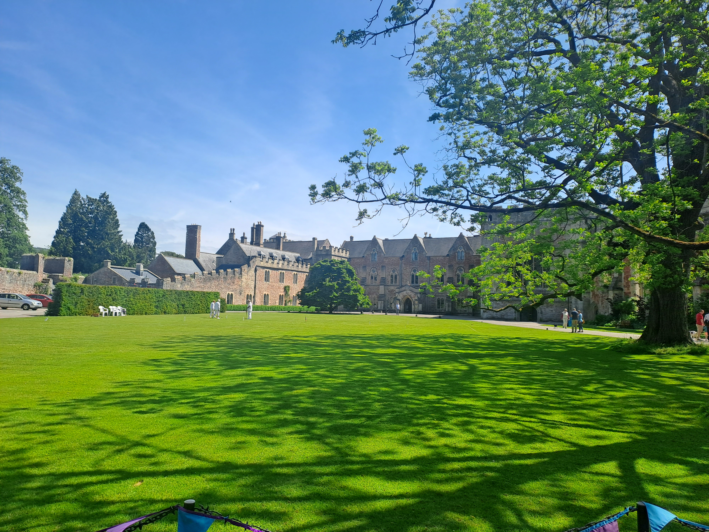
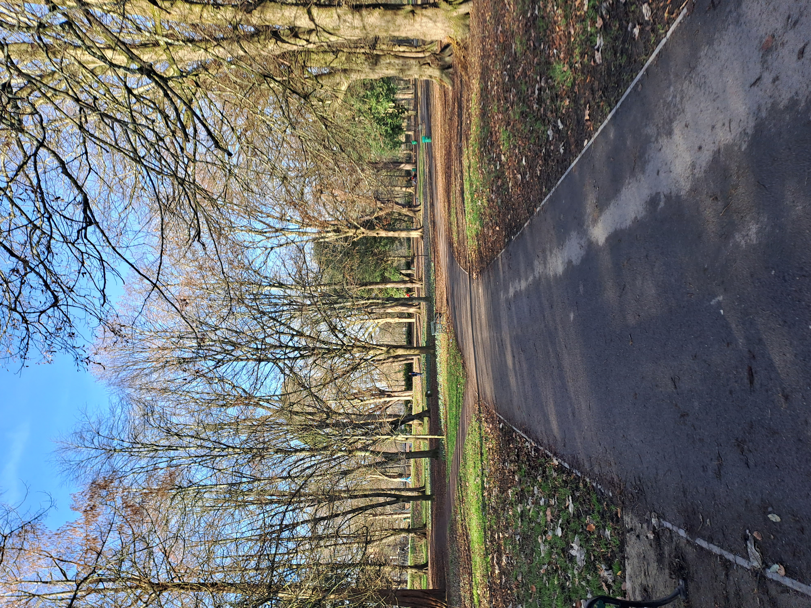

Chapter I
Professional Profile
How I operate in regulated environments, with emphasis on discretion, service continuity and practical standards.
Open chapter
Chapter I
I build structure in complex environments. From digital systems and SharePoint architecture to governance workflows and team coordination, I combine operational discipline with modern tooling to make work clearer, faster and more reliable.
Who I Am Professionally
Chapter Pages
Chapter I
How I operate in regulated environments, with emphasis on discretion, service continuity and practical standards.
Open chapterChapter II
Career progression across NHS administration, information security, technical support, customer operations and legal administration.
Open chapterChapter III
Current focus in writing, documentation systems, low-complexity web build and responsible use of digital tools.
Open chapterSteady foundations support long-term growth, clarity and trusted delivery.
